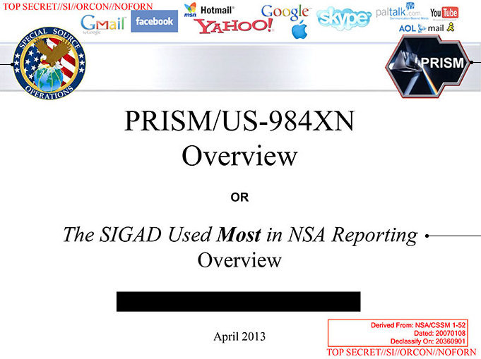

Wie werden wir überwacht?
Nach dem 11. September 2001 und den darauffolgenden Terroranschlägen auf europäischem Boden kam es zu einer erheblichen Ausweitung der staatlichen Überwachung und der Terrorismusbekämpfung in Europa und weltweit.
Eine der nachhaltigsten Veränderungen, die die Anschläge des 11. September 2001 in der westlichen Welt nach sich gezogen haben, ist die spürbare Beschleunigung der seit den späten 1980er Jahren zu beobachtenden Akzentverschiebung von einer reaktiven hin zu einer präventiv orientierten Sicherheitspolitik. Diese langfristige „Versicherheitsrechtlichung“ wird durch den rasanten technischen Fortschritt in der Digitalisierung wesentlich erleichtert – wenn nicht sogar befördert. Sowohl die Verfügbarkeit potenziell sicherheits- und damit zugleich auch überwachungsrelevanter Daten als auch die Möglichkeiten für deren technisch unkomplizierten Transfer und ihre systematische Auswertung durch staatliche Behörden haben sich signifikant verändert. Noch in den 1980er Jahren lag der Schwerpunkt staatlicher Überwachung zu einem wesentlichen Teil im Bereich der „klassischen“ Telefonüberwachung; digital erfasste (Massen-) Daten etwa zur Mobilität, zu den Kommunikationsverläufen oder zum Surfverhalten im Internet, aus denen sich vielfältige Informationen mit potenzieller Sicherheitsrelevanz generieren lassen, waren entweder gar nicht verfügbar oder mussten einzelfallbezogen und personalaufwändig erhoben werden, etwa durch längerfristig angelegte Observationsmaßnahmen.
Als Reaktion auf die Terroranschläge, drängte die EU auf die Einführung der Vorratsdatenspeicherung, bei der Verkehrsdaten von Telekommunikation ohne konkreten Anlass gespeichert werden. Trotz erheblicher Kritik wurde diese Maßnahme in Deutschland und einigen anderen Ländern eingeführt. Dies wurde eingeführt, um die Sicherheit zu erhöhen und potenzielle Bedrohungen zu bekämpfen. Dies hat jedoch große Bedenken hinsichtlich des Datenschutzes und der Privatsphäre aufgeworfen, da umfangreiche Daten über Bürger gesammelt und gespeichert werden. Zur Überwachung der Kommunikation wurde zuvor die deutsche Telekommunikations-Überwachungsverordnung (TKÜV) am 22. Januar 2002 - Kurz nach dem 11. September 2001- vom Bundesministerium für Wirtschaft und Technologie erlassen. Sie beinhaltet das automatisierte Abhören von Telefon- und Internet-Kommunikation im Allgemeinen und E-Mail- Kommunikation im Besonderen.
Eine bedeutende Datenbank im Rahmen der Vorratsdatenspeicherung, ist die Antiterrordatei. Sie ist eine zentrale Datenbank, die von deutschen Sicherheitsbehörden betrieben wird und dazu dient, Informationen über potenzielle terroristische Bedrohungen und extremistische Aktivitäten und auszutauschen. Die Datei wurde unmittelbar nach den Terroranschlägen am 11. September 2001 in den Vereinigten Staaten und den folgenden internationalen Sicherheitsbedenken eingerichtet.
Eine kontroverse Methode ist zudem der Einsatz von einen sogenannten “Staatstrojaner” oder in Deutschland “Bundestrojaner” oder “Polizei-Trojaner” genannt. Ein "Staatstrojaner" ist eine von staatlichen Stellen eingesetzte Software, die ohne das Wissen des Betroffenen auf Computern oder anderen informationstechnischen Systemen installiert wird. Diese Software dient der Überwachung und ist durch Gesetze wie die Online-Durchsuchung oder die Quellen-Telekommunikationsüberwachung legalisiert. Ein entsprechender Gesetzesentwurf wurde 2023 vom Justizministerium vorgelegt. Die Änderungen sehen vor, dass die Polizei die Quellen-Telekommunikationsüberwachung (Quellen-TKÜ) nur bei 33 besonders schweren Straftaten (anstatt zuvor 44) verwenden darf, und gespeicherte Kommunikation darf nur noch per Online-Durchsuchung überwacht werden. Kritiker argumentieren jedoch, dass grundlegende Probleme im Zusammenhang mit staatlichem Hacking nicht ausreichend berücksichtigt werden. Ein Beispiel ist dafür die Software FinFisher, die von der deutschen FinFisher GmbH vermarket wird, zudem auch RCIS (Remote Communication Interception Software) entwickelt vom BKA oder Pegasus des israelischen Unternehmens NSO Group – die sich mithilfe einer PDF-Datei auf dem betroffenen Gerät (iOS- und Android-Smartphones) ausbreitet. Besonders NSO-Pegasus wurde dazu eingesetzt Journalisten, Menschenrechtler, Anwälte und Politiker auszuspähen.
Die sind nur Beispiele von einer Reihe an Technologien, die in Deutschland eingesetzt werden, um in die Privatsphäre von der Bevölkerung einzudringen und sie zu überwachen. Unteranderem kam es in Deutschland zur Einführung diverse anderer Maßnahmen, die in den letzten Jahren durchgesetzt wurden, wie in etwa; die Einführung der Steuer-Identifikationsnummer zum 1. Juli 2007 - ähnlich der PKZ der DDR, Erstellung von Bewegungsprofilen, teilweise Aufhebung des Bankgeheimnisses und der ärztlichen Schweigepflicht, Lauschangriffe, Einführung von biometrischen Kontrollen und so weiter. Diese Maßnahmen wurden mit Kritik konfrontiert. Kritiker glauben sie sehen hierhin deutliche Schritte hin zu einem Überwachungsstaat oder bereits dessen Existenz, ähnlich wie in der DDR.
Snowden Enthüllungen
Die Snowden Enthüllung ist das wichtigste Ereignis, wenn es zum Thema der Staatsüberwachung kommt. Sie war der Beginn des NSA-Skandals und konnte auch die Spionage der NSA an deutsche Bürger nachweisen.
Im Juni 2013 begannen der britische Guardian und die amerikanische Washington Post, geheime Dokumente zu veröffentlichen, die sie vom früheren CIA/ NSA-Mitarbeiter Edward Snowden bekommen hatten. Snowden selbst wurde in den USA der Spionage angeklagt und floh nach Russland ins Exil. Die beiden Zeitungen wurden im April 2014 für ihre Enthüllungen mit dem Pulitzer-Preis ausgezeichnet.
Die von Snowden entwendeten Dokumente enthüllen ein weltweites Netz von Spionagesystemen. Sie zeigen, dass die amerikanische National Security Agency (NSA), die britischen Government Communications Headquarters (GHCQ) und ihre Partnerdienste jede Form elektronischer Kommunikation überwachen wollen. Wer überwacht, spioniert und hackt: Im Zentrum des Skandals stehen die NSA und der britische Geheimdienst GCHQ. Zu den engsten Partnern der USA und Großbritannien gehören Kanada, Australien und Neuseeland, zusammen bilden sie die Five Eyes. Weitere Länder arbeiten mit diesen fünf zusammen, darunter Deutschland, Schweden, Frankreich, Belgien oder auch Japan und Südkorea.
Die NSA sammelte von Oktober 2001 bis Mai 2015 sämtliche Verbindungsdaten aus Telefonen Gespräche und E- Mail-Verkehr in den USA. Am 1. Juni 2015 jedoch ist Sektion 215 des Patriot Acts durchlaufen, die umstrittene rechtliche Grundlage für die Datenspeicherung. Auch stellte sich heraus das Deutsche von der massenhaften Datensammlung der NSA betroffen waren. Dokumente von dem Whistleblower Edward Snowden zeigten, dass BND und NSA zusammen mit einem nicht genannten dritten Partner – wahrscheinlich einem Telekommunikationsanbieter im Projekt WHARPDRIVE kooperieren oder das zumindest getan haben. WHARPDRIVE fand auf deutschen Boden statt und gehört zum großangelegten Überwachungsprogramm RAMPART-A, in dessen Rahmen die NSA wichtige Glasfaserkabel und Router anzapft, um Telefongespräche, Chats, Mails und andere Kommunikation von Millionen Menschen zu analysieren. Außerdem hat der BND möglicherweise im Rahmen der Operation Eikonal zwischen 2004 und 2008 in Frankfurt abgefangene Rohdaten an die NSA weitergeleitet. Unter den Spionierten Leuten befand sich auch ehemalige Bundeskanzlerin Angela Merkel.
Wichtige Software der Massenspionage, die von der NSA eingesetzt wurde, waren: XKeyscore (XKS) und PRISM.
XKeyscore wird von der NSA als ein “System zur Ausnutzung von Digitial Network Intelligence / Analysestruktur” bezeichnet. Nachweislich wurde Xkeyscore vom Bundesnachrichtendient und vom Bundesamt für Verfassungsschutz eingesetzt, als “Anti-Terrorismus” Mittel.
Das XKeyscore-Programm, ist auf die Analyse von Metadaten und anderen Daten abgezielt. Es ermöglicht gezielte Suchanfragen und das Sammeln von Informationen über einzelne Zielpersonen. Das Programm kann auf verschiedene Weisen Informationen sammeln, darunter:
Stichwortlisten: Es kann nach bestimmten Stichwörtern oder Suchanfragen suchen, die von der Zielperson verwendet werden.
Chats und E-Mails: XKeyscore kann auch Chat-Nachrichten und E-Mails analysieren.
Echtzeitdaten: Eine temporäre und ungefilterte Sammlung aller für die Zielperson verfügbaren Daten in Echtzeit ist möglich.
Die Identifizierung der Zielpersonen kann anhand verschiedener Merkmale erfolgen, wie dem Namen, Merkmalen des Browsers, Telefonnummern, Nicknames oder Kontaktlisten in Instant Messaging. Auch die Identifizierung über IP-Adressen oder die verwendete Sprache ist möglich.
Die gesammelten Internetdaten können nur für kurze Zeit gespeichert werden, während Verbindungsdaten etwa 30 Tage aufbewahrt werden können. Daten können auch in andere Datenbanken verschoben und dort längerfristig gespeichert werden. Dies ermöglicht eine anhaltende Analyse und Überwachung von Personen und Informationen, die als relevant erachtet werden.
PRISM (Planning Tool for Resource Integration, Sychronization, and Management) ist Teil des groß angelegten Überwachungsprogramm “Stellarwind”. PRISM soll eine umfassende Überwachung von Personen innerhalb und außerhalb der USA ermöglichen, die digital kommunizieren. Dabei sei es der NSA und dem FBI laut der Washington Post möglich, auf live geführte Kommunikation und gespeicherte Informationen bei den beteiligten Internetkonzernen zuzugreifen. So wurden Unternehmen wie Google, Facebook, Microsoft und Apple verpflichtet, Daten über ihre Nutzer an die NSA weiterzugeben.
